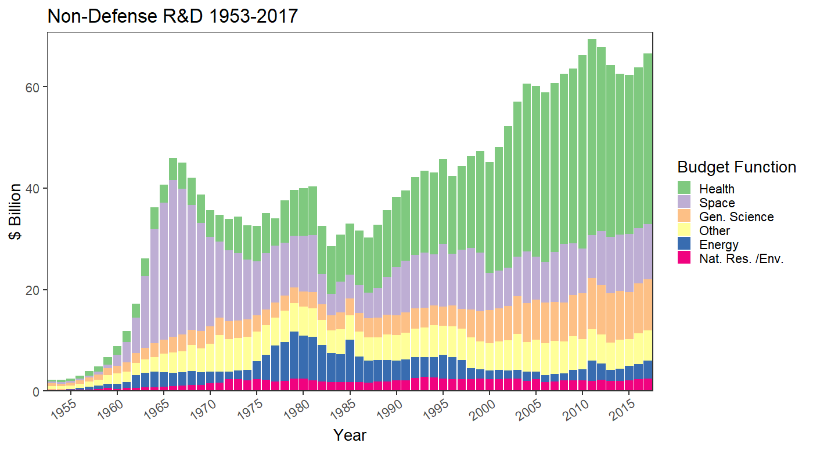
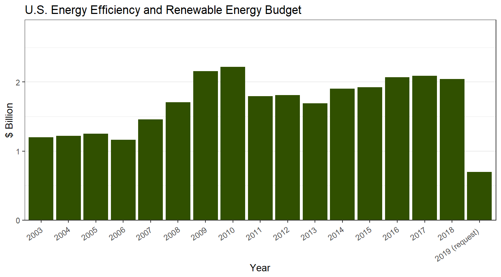
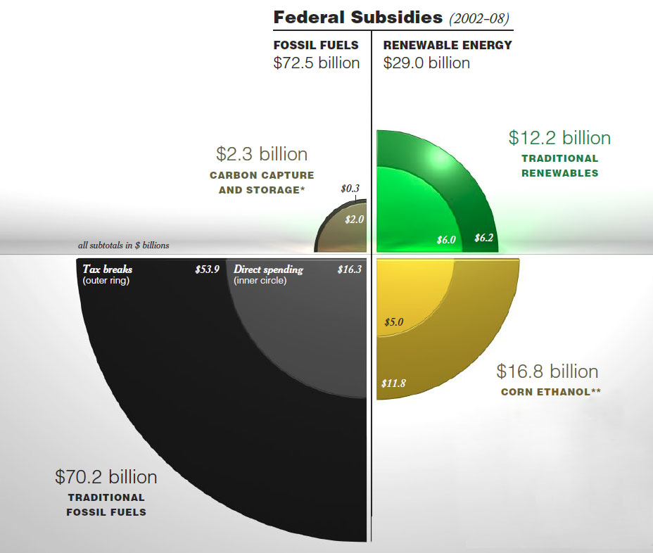
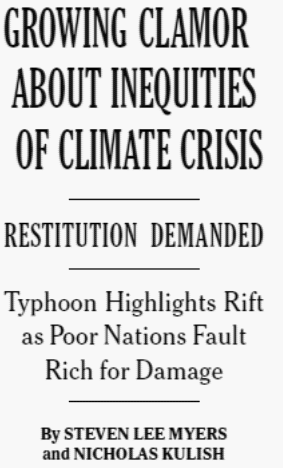
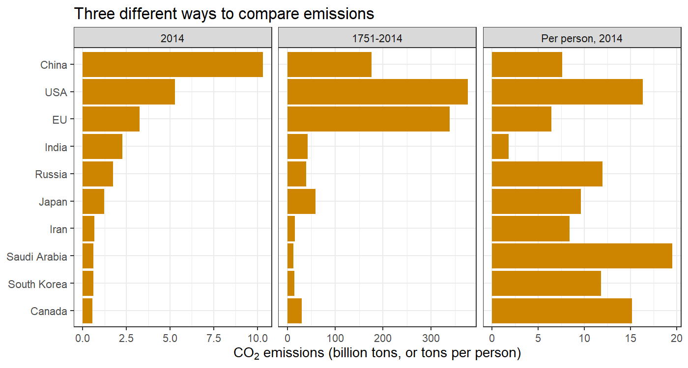
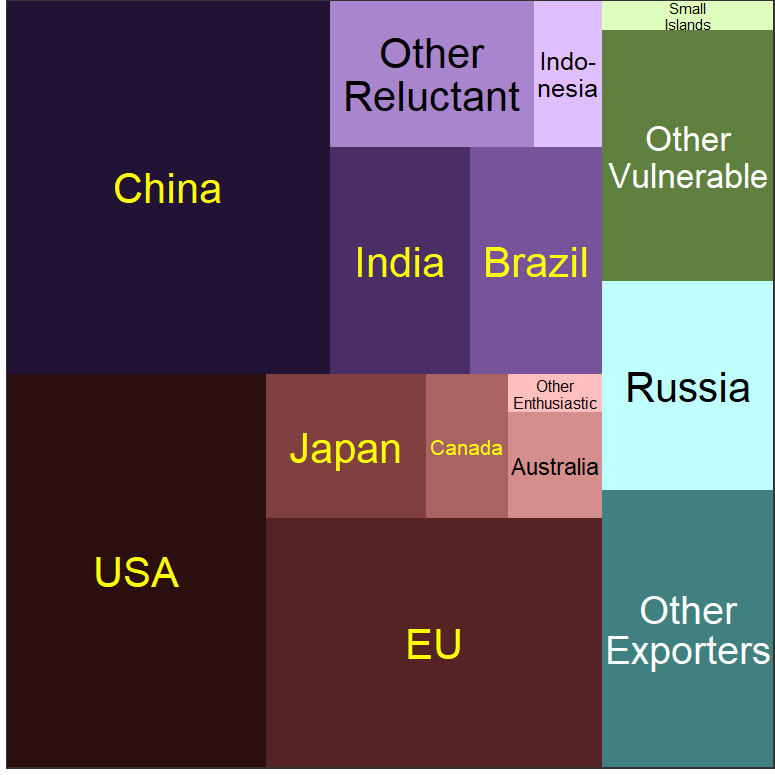

U.S. TO GIVE $3 BILLION TO CLIMATE FUND TO HELP POOR NATIONS AND SPUR RICH ONES By CORAL DAVENPORT and MARK LANDLER NY Times, Nov. 15, 2014, p. A5 Republicans … are working to block the administration from funneling federal dollars to developing nations so they can tackle climate change. By AMY HARDER and KRISTINA PETERSON The Wall Street Journal, Nov. 27, 2015 |
 NY Times, Nov. 17, 2013, p. A1 |

|
 |